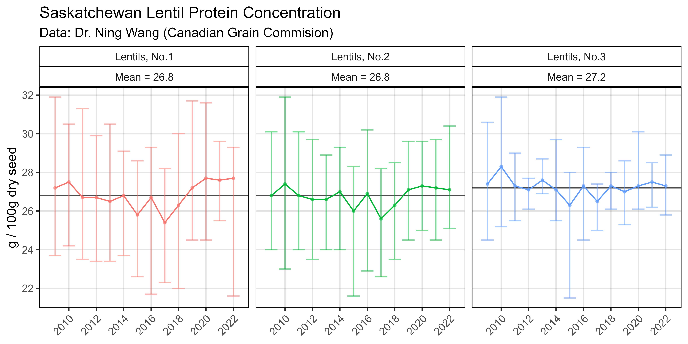

Breeding potential of cultivated lentil for increased protein and amino acid concentrations in the Northern Great Plains
Crop Science. (2025) 65(3): e70085.
Introduction
This vignette contains the R code and analysis done for
the paper:
- Derek Wright, Jiayi Hang, James D House & Kirstin E Bett (2025) Breeding potential of cultivated lentil for increased protein and amino acid concentrations in the Northern Great Plains. Crop Science. (2025) 65(3): e70085. doi.org/10.1002/csc2.70085
- https://github.com/derekmichaelwright/AGILE_LDP_Protein
which is follow-up to:
&
- Derek M Wright, Sandesh Neupane, Taryn Heidecker, Teketel A Haile, Clarice J Coyne, Rebecca J McGee, Sripada Udupa, Fatima Henkrar, Eleonora Barilli, Diego Rubiales, Tania Gioia, Giuseppina Logozzo, Stefania Marzario, Reena Mehra, Ashutosh Sarker, Rajeev Dhakal, Babul Anwar, Debashish Sarker, Albert Vandenberg, and Kirstin E. Bett. Understanding photothermal interactions can help expand production range and increase genetic diversity of lentil (Lens culinaris Medik.). Plants, People, Planet. (2020) 3(2): 171-181. doi.org/10.1002/ppp3.10158
- https://github.com/derekmichaelwright/AGILE_LDP_Phenology
This work done as part of the AGILE & EVOLVES projects at the University of Saskatchewan along with collaboration with partners at the University of Manitoba.


Data Preparation
# Load Libraries
library(tidyverse)
library(ggbeeswarm)
library(ggpubr)
library(FactoMineR)
library(plotly)
library(htmlwidgets)
# Create plotting theme
theme_AGL <- theme_bw() +
theme(strip.background = element_rect(colour = "black", fill = NA, size = 0.5),
panel.background = element_rect(colour = "black", fill = NA, size = 0.5),
panel.border = element_rect(colour = "black", size = 0.5),
panel.grid = element_line(color = alpha("black", 0.1), size = 0.5),
panel.grid.minor.x = element_blank(),
panel.grid.minor.y = element_blank(),
legend.key = element_rect(color = NA))
# Prep data
myPs <- c("Protein", "Glutamate", "Aspartate", "Arginine",
"Leucine", "Lysine", "Phenylalanine", "Serine", "Valine",
"Isoleucine", "Proline", "Alanine", "Glycine", "Threonine",
"Histidine", "Tyrosine", "Methionine", "Cysteine", "Tryptophan")
myEs1 <- c("Sutherland, Canada 2016", "Rosthern, Canada 2016",
"Sutherland, Canada 2017", "Rosthern, Canada 2017")
myEs2 <- c("Su16", "Ro16", "Su17", "Ro17")
myCs_Expt <- c("steelblue", "darkorange", "darkblue", "darkred")
myCs_Region <- c("darkred", "darkgreen", "darkorange", "darkblue", "steelblue")
myCs_Clusters <- c("red4", "darkorange3", "blue2", "deeppink3",
"steelblue", "darkorchid4", "darkslategray", "chartreuse4")
# Wet Chemistry Data
d1 <- read.csv("Data/myD_Protein_WetChem.csv") %>%
select(-Plot, -Rep, -Sample.Name..1st..text.) %>%
rename(Year=Planting.Date..date.) %>%
gather(AminoAcid, Value, 5:ncol(.)) %>%
mutate(AminoAcid = gsub("Protein....", "Protein", AminoAcid),
AminoAcid = gsub("Glutamic.acid", "Glutamate", AminoAcid),
AminoAcid = gsub("Aspartic.acid", "Aspartate", AminoAcid),
AminoAcid = gsub("..1st....", "", AminoAcid),
AminoAcid = factor(AminoAcid, levels = myPs),
Expt = factor(paste(Location, Year), levels = myEs1),
ExptShort = plyr::mapvalues(Expt, myEs1, myEs2),
Value = round(as.numeric(Value), 4))
# NIRS Data
d2 <- read.csv("Data/myD_Protein_NIRS.csv") %>%
select(-Plot, -Rep, -Sample.Name..1st..text.) %>%
rename(Year=Planting.Date..date.) %>%
gather(AminoAcid, Value, 5:ncol(.)) %>%
mutate(AminoAcid = gsub("Glutamic.acid", "Glutamate", AminoAcid),
AminoAcid = gsub("Aspartic.acid", "Aspartate", AminoAcid),
AminoAcid = gsub("..1st....", "", AminoAcid),
AminoAcid = factor(AminoAcid, levels = myPs),
Expt = factor(paste(Location, Year), levels = myEs1),
ExptShort = plyr::mapvalues(Expt, myEs1, myEs2),
Value = round(Value, 4))
#
myLDP <- read.csv("Data/myD_LDP.csv")
# Protein Families
myPFs <- c("Family.Glutamate", "Family.Aspartate", "Family.Pyruvate",
"Family.Serine", "Family.Histidine", "Family.Aromatic",
"Perc.Family.Glutamate", "Perc.Family.Aspartate", "Perc.Family.Pyruvate",
"Perc.Family.Serine", "Perc.Family.Histidine", "Perc.Family.Aromatic")
d3 <- d2 %>% spread(AminoAcid, Value) %>%
mutate(Family.Glutamate = Glutamate + Proline + Arginine,
Family.Aspartate = Aspartate + Threonine + Isoleucine + Methionine + Lysine,
Family.Pyruvate = Alanine + Valine + Leucine,
Family.Serine = Serine + Glycine + Cysteine,
Family.Histidine = Histidine,
Family.Aromatic = Tryptophan + Phenylalanine + Tyrosine ) %>%
mutate(Perc.Family.Glutamate = 100 * Family.Glutamate / Protein,
Perc.Family.Aspartate = 100 * Family.Aspartate / Protein,
Perc.Family.Pyruvate = 100 * Family.Pyruvate / Protein,
Perc.Family.Serine = 100 * Family.Serine / Protein,
Perc.Family.Histidine = 100 * Family.Histidine / Protein,
Perc.Family.Aromatic = 100 * Family.Aromatic / Protein) %>%
select(Name, Expt, ExptShort,
Family.Glutamate, Family.Aspartate, Family.Histidine,
Family.Pyruvate, Family.Serine, Family.Aromatic,
#
Perc.Family.Glutamate, Perc.Family.Aspartate, Perc.Family.Histidine,
Perc.Family.Pyruvate, Perc.Family.Serine, Perc.Family.Aromatic) %>%
gather(AminoAcidFamily, Value, 4:ncol(.)) %>%
mutate(AminoAcidFamily = factor(AminoAcidFamily, levels = myPFs))
# Essential Amino Acid Ratio
myEAA <- myEAA <- c("Histidine","Isoleucine","Leucine","Lysine","Methionine",
"Phenylalanine","Threonine","Tryptophan","Valine")
x1 <- d2 %>% filter(AminoAcid == "Protein") %>%
select(Name, Expt, ExptShort, Protein=Value)
x2 <- d2 %>% filter(AminoAcid %in% myEAA) %>%
group_by(Name, ExptShort) %>%
summarise(Essential.AA = sum(Value)) %>% ungroup()
d4 <- left_join(x1, x2, by = c("Name", "ExptShort")) %>%
mutate(Perc.Essential.AA = 100 * Essential.AA / Protein)GWAS
Prepare Data For GWAS
# Function to fix names for GWAS
fixNames <- function(xx) {
xx %>% mutate(Name = gsub(" ", "_", Name),
Name = gsub("-", "\\.", Name),
Name = plyr::mapvalues(Name, "3156.11_AGL", "X3156.11_AGL"))
}
# Ro16 data
myY <- d2 %>% filter(ExptShort == "Ro16") %>%
select(-Entry, -Location, -Year, -Expt) %>%
mutate(AminoAcid = paste(AminoAcid, ExptShort, sep = "_")) %>%
select(-ExptShort) %>%
spread(AminoAcid, Value) %>%
fixNames()
write.csv(myY, "Data/myY_NIRS_Ro16.csv", row.names = F)
# Ro17 data
myY <- d2 %>% filter(ExptShort == "Ro17") %>%
select(-Entry, -Location, -Year, -Expt) %>%
mutate(AminoAcid = paste(AminoAcid, ExptShort, sep = "_")) %>%
select(-ExptShort) %>%
spread(AminoAcid, Value) %>%
fixNames()
write.csv(myY, "Data/myY_NIRS_Ro17.csv", row.names = F)
# Su16 data
myY <- d2 %>% filter(ExptShort == "Su16") %>%
select(-Entry, -Location, -Year, -Expt) %>%
mutate(AminoAcid = paste(AminoAcid, ExptShort, sep = "_")) %>%
select(-ExptShort) %>%
spread(AminoAcid, Value) %>%
fixNames()
write.csv(myY, "Data/myY_NIRS_Su16.csv", row.names = F)
# Su17 data
myY <- d2 %>% filter(ExptShort == "Su17") %>%
select(-Entry, -Location, -Year, -Expt) %>%
mutate(AminoAcid = paste(AminoAcid, ExptShort, sep = "_")) %>%
select(-ExptShort) %>%
spread(AminoAcid, Value) %>%
fixNames()
write.csv(myY, "Data/myY_NIRS_Su17.csv", row.names = F)
# All Data
myY <- d2 %>%
select(-Entry, -Location, -Year, -Expt) %>%
mutate(AminoAcid = paste(AminoAcid, ExptShort, sep = "_")) %>%
select(-ExptShort) %>%
spread(AminoAcid, Value) %>%
fixNames()
write.csv(myY, "Data/myY_NIRS.csv", row.names = F)
# Covariate Data
myCV <- myLDP %>%
select(Name, DTF_Ro16, DTF_Ro17, DTF_Su16, DTF_Su17,
REP_Ro16, REP_Ro17, REP_Su16, REP_Su17) %>%
fixNames()
write.csv(myCV, "Data/myCV.csv", row.names = F)Run GWAS
# devtools::install_github("jiabowang/GAPIT")
library(GAPIT)
#
myG <- read.csv("Data/myG_LDP.csv", header = F)
myCV <- read.csv("Data/myCV.csv")
# Run GWAS on all data
myY <- read.csv("Data/myY_NIRS.csv")
myGAPIT <- GAPIT(
Y = myY,
G = myG,
PCA.total = 0,
model = c("MLM","FarmCPU","Blink"),
Phenotype.View = F
)
# Run GWAS for Ro16 with CVs
myY_Ro16 <- read.csv("Data/myY_NIRS_Ro16.csv")
myGAPIT <- GAPIT(
Y = myY_Ro16,
G = myG,
CV = myCV[,c("Name","DTF_Ro16","REP_Ro16")],
PCA.total = 0,
model = c("MLM","FarmCPU","Blink"),
Phenotype.View = F
)
# Run GWAS for Ro17 with CVs
myY_Ro17 <- read.csv("Data/myY_NIRS_Ro17.csv")
myGAPIT <- GAPIT(
Y = myY_Ro17,
G = myG,
CV = myCV[!is.na(myCV$REP_Ro17),c("Name","DTF_Ro17","REP_Ro17")],
PCA.total = 0,
model = c("MLM","FarmCPU","Blink"),
Phenotype.View = F
)
# Run GWAS for Su16 with CVs
myY_Su16 <- read.csv("Data/myY_NIRS_Su16.csv")
myGAPIT <- GAPIT(
Y = myY_Su16,
G = myG,
CV = myCV[,c("Name","DTF_Su16","REP_Su16")],
PCA.total = 0,
model = c("MLM","FarmCPU","Blink"),
Phenotype.View = F
)
# Run GWAS for Su17 with CVs
myY_Su17 <- read.csv("Data/myY_NIRS_Su17.csv")
myGAPIT <- GAPIT(
Y = myY_Su17,
G = myG,
CV = myCV[!is.na(myCV$REP_Su17),c("Name","DTF_Su17","REP_Su17")],
PCA.total = 0,
model = c("MLM","FarmCPU","Blink"),
Phenotype.View = F
)Post GWAS
# devtools::install_github("derekmichaelwright/gwaspr")
library(gwaspr)
#
myG <- read.csv("Data/myG_LDP.csv", header = T)
myMs <- c(# Marker set #1
"Lcu.2RBY.Chr3p339102503", "Lcu.2RBY.Chr5p327505937", "Lcu.2RBY.Chr5p467479275",
# Marker set #2
"Lcu.2RBY.Chr1p437385632", "Lcu.2RBY.Chr4p432694216", "Lcu.2RBY.Chr6p411536500")
myCs <- c(rep("red",3), rep("blue",3))Supplemental Table 2 - Significant Results
# reorder GWAS results tables and compile significant results
myR1 <- list_Result_Files("GWAS_Results/")
order_GWAS_Results(folder = "GWAS_Results/", files = myR1)
x1 <- table_GWAS_Results("GWAS_Results/", myR1, threshold = 6.7, sug.threshold = 5.3)
#
myR2 <- list_Result_Files("GWAS_Results_CV_DTF_REP/")
order_GWAS_Results(folder = "GWAS_Results_CV_DTF_REP/", files = myR2)
x2 <- table_GWAS_Results("GWAS_Results_CV_DTF_REP/", myR2, threshold = 6.7, sug.threshold = 5.3)
#
x1 <- x1 %>% mutate(CV = "NONE") %>% arrange(P.value)
x2 <- x2 %>% mutate(CV = "DTF+REP") %>% arrange(P.value)
xx <- bind_rows(x1, x2)
write.csv(xx, "Supplemental_Table_02.csv", row.names = F)Manhattan plots
# Create custom manhattan plots
myTs <- list_Traits("GWAS_Results/")
for(i in myTs) {
# No CV
mp1 <- gg_Manhattan(folder = "GWAS_Results2/", trait = i,
threshold = 6.7, sug.threshold = 5.3, legend.rows = 2,
vlines = myMs, vline.colors = myCs )
# With CV
mp2 <- gg_Manhattan(folder = "GWAS_Results2_CV_DTF_REP/", trait = i, facet = F,
title = paste(i, "| CV = DTF + REP"),
threshold = 6.7, sug.threshold = 5.3, legend.rows = 2,
vlines = myMs, vline.colors = myCs)
# Bind together
i1 <- substr(i, 1, regexpr("_",i)-1)
i2 <- substr(i, regexpr("_",i)+1, nchar(i))
mp <- ggarrange(mp1, mp2, nrow = 2, ncol = 1, common.legend = T, legend = "bottom")
ggsave(paste0("Additional/ManH/Multi_",i2,"_",i1,".png"),
mp, width = 12, height = 8, bg = "white")
}Supplemental Figure 1 - Wet Chem vs NIRS

# Prep data
x1 <- d1 %>% select(Name, Expt, AminoAcid, `Wet Chemistry`=Value)
x2 <- d2 %>% select(Name, Expt, AminoAcid, NIRS=Value)
xx <- left_join(x1, x2, by = c("Name", "Expt", "AminoAcid"))
# Plot
mp <- ggplot(xx, aes(x = `Wet Chemistry`, y = NIRS)) +
geom_point(aes(color = Expt), alpha = 0.5, pch = 16) +
stat_smooth(geom = "line", method = "lm", alpha = 0.7, linewidth = 1.5) +
stat_regline_equation(aes(label = ..rr.label..)) +
facet_wrap(AminoAcid ~ ., scales = "free") +
scale_color_manual(values = myCs_Expt) +
theme_AGL +
theme(legend.position = "bottom") +
guides(color = guide_legend(override.aes = list(size = 3))) +
labs(title = "Concentration (g / 100g dry seed)",
y = "Near-infrared Spectroscopy")
ggsave("Supplemental_Figure_01.png", mp, width = 10, height = 8, dpi = 600)
# Prep data
x1 <- d1 %>% select(Name, Expt, AminoAcid, `Wet Chemistry`=Value)
x2 <- d2 %>% select(Name, Expt, AminoAcid, NIRS=Value)
xx <- left_join(x1, x2, by = c("Name", "Expt", "AminoAcid")) %>%
filter(AminoAcid == "Protein")
# Plot
mp <- ggplot(xx, aes(x = `Wet Chemistry`, y = NIRS)) +
geom_point(aes(color = Expt), alpha = 0.5, pch = 16) +
stat_smooth(geom = "line", method = "lm", alpha = 0.7, linewidth = 1.25) +
stat_regline_equation(aes(label = ..rr.label..)) +
facet_wrap(AminoAcid ~ ., scales = "free") +
scale_color_manual(values = myCs_Expt) +
theme_AGL +
theme(legend.position = "bottom") +
guides(color = guide_legend(override.aes = list(size = 3), nrow = 2)) +
labs(title = "Concentration (g / 100g dry seed)",
y = "Near-infrared Spectroscopy")
ggsave("Supplemental_Figure_01a.png", mp, width = 4.5, height = 4, dpi = 600)Supplemental Figure 2 - Total Protein & Amino Acids

# Prep data
xx <- d2 %>%
mutate(Family = ifelse(AminoAcid == "Protein", "Total Protein", NA),
Family = ifelse(AminoAcid %in% c("Glutamate", "Proline", "Arginine"), "Glutamate", Family),
Family = ifelse(AminoAcid %in% c("Aspartate", "Threonine", "Isoleucine", "Methionine", "Lysine"), "Aspartate", Family),
Family = ifelse(AminoAcid %in% c("Alanine", "Valine", "Leucine"), "Pyruvate", Family),
Family = ifelse(AminoAcid %in% c("Serine", "Glycine", "Cysteine"), "Serine", Family),
Family = ifelse(AminoAcid %in% c("Histidine"), "Histidine", Family),
Family = ifelse(AminoAcid %in% c("Tryptophan", "Phenylalanine", "Tyrosine"), "Aromatic", Family)) %>%
mutate(AminoAcid = factor(AminoAcid, levels = myPs),
Family = factor(Family, levels = c("Total Protein", "Glutamate", "Aspartate", "Pyruvate",
"Serine", "Histidine", "Aromatic")))
# Plot
mp <- ggplot(xx, aes(x = Value, fill = Family)) +
geom_histogram(color = "black", alpha = 0.7, lwd = 0.2) +
facet_grid(ExptShort ~ AminoAcid, scales = "free_x") +
scale_x_reverse() +
theme_AGL +
theme(legend.position = "bottom",
axis.text.x = element_text(angle = 45, hjust = 1, size = 6)) +
guides(fill = guide_legend(nrow = 1)) +
labs(title = "Lentil Diversity Panel", x = "g / 100g dry seed")
ggsave("Supplemental_Figure_02.png", mp, width = 18, height = 5, dpi = 600)Figure 1 - Total Protein & Amino Acids

# Prep data
myFams1 <- c("Family.Glutamate", "Family.Aspartate", "Family.Pyruvate",
"Family.Serine", "Family.Histidine", "Family.Aromatic")
myFams2 <- c("Glutamte Family", "Aspartate Family", "Pyruvate Family",
"Serine Family", "Histidine Family", "Aromatic Family")
xx <- d3 %>% filter(!grepl("Perc", AminoAcidFamily)) %>%
mutate(AminoAcidFamily = plyr::mapvalues(AminoAcidFamily, myFams1, myFams2))
# Plot
mp1 <- ggplot(xx, aes(x = Value, fill = Expt)) +
geom_histogram(color = "black", alpha = 0.7, lwd = 0.1) +
facet_grid(ExptShort ~ AminoAcidFamily, scales = "free_x", labeller = label_wrap_gen(width = 10)) +
scale_fill_manual(values = myCs_Expt) +
theme_AGL +
theme(legend.position = "bottom",
legend.text = element_text(size = 8),
axis.text.x = element_text(angle = 45, hjust = 1, size = 6)) +
guides(fill = guide_legend(ncol = 4, override.aes = list(lwd = 0))) +
labs(title = "A) Amino Acid Families",
y = "Count", x = "g / 100g dry seed")
mpl <- get_legend(mp1)
mp1 <- mp1 + theme(legend.position = "none")
# Prep data
xx <- d2 %>% filter(AminoAcid != "Protein")
# Plot
mp2 <- ggplot(xx, aes(x = AminoAcid, y = Value, fill = Expt)) +
geom_boxplot(alpha = 0.7, coef = 5, lwd = 0.1, position = position_dodge(width = 0.9)) +
scale_fill_manual(name = NULL, values = myCs_Expt) +
scale_y_continuous(breaks = 0:5) +
theme_AGL +
theme(legend.position = "none",
axis.text.x = element_text(angle = 45, hjust = 1)) +
labs(title = "B) Amino Acids", y = "g / 100g dry seed", x = NULL)
#
myEAA <- myEAA <- c("Histidine", "Isoleucine", "Leucine", "Lysine", "Methionine",
"Phenylalanine", "Threonine", "Tryptophan", "Valine")
x1 <- d2 %>% filter(AminoAcid == "Protein") %>%
select(Name, ExptShort, Protein=Value)
x2 <- d2 %>% filter(AminoAcid %in% myEAA) %>%
group_by(Name, ExptShort) %>%
summarise(Essential = sum(Value)) %>% ungroup()
xx <- left_join(x1, x2, by = c("Name", "ExptShort")) %>%
mutate(Ratio = 100 * Essential / Protein)
# Plot
mp3 <- ggplot(xx, aes(x = ExptShort, y = Protein)) +
geom_violin() +
geom_quasirandom(aes(color = ExptShort), pch = 16, size = 1, alpha = 0.7) +
geom_boxplot(width = 0.1, coef = 5) +
scale_color_manual(values = myCs_Expt) +
scale_y_continuous(breaks = c(26,28,30,32,34)) +
theme_AGL +
theme(legend.position = "none") +
labs(title = "C) Total Protein", y = "g / 100g dry seed", x = NULL)
mp4 <- ggplot(xx, aes(x = ExptShort, y = Ratio)) +
geom_violin() +
geom_quasirandom(aes(color = ExptShort), pch = 16, size = 1, alpha = 0.7) +
geom_boxplot(width = 0.1, coef = 5) +
scale_color_manual(values = myCs_Expt) +
theme_AGL +
theme(legend.position = "none") +
labs(title = "D) Essential Amino Acids", y = "Percent of Total Protein", x = NULL)
# Bind together
mp <- ggarrange(ggarrange(mp1, mp2, mp3, mp4, ncol = 2, nrow = 2),
mpl, nrow = 2, heights = c(1,0.1))
ggsave("Figure_01.png", mp, width = 10, height = 8, dpi = 600, bg = "white")Figure 2 - Protein x Traits

# Prep data
myCots <- c("Red", "Yellow", "Red/Yellow", "Green")
xx <- d2 %>% filter(AminoAcid == "Protein") %>%
left_join(myLDP, by = c("Entry","Name")) %>%
mutate(Origin = ifelse(Origin %in% c("Canada","USA"), "Local", "Other"),
CotyledonColor = factor(CotyledonColor, levels = myCots)) %>%
arrange(desc(Origin)) %>%
filter(ExptShort == "Su16")
# Plot
mp1 <- ggplot(xx, aes(x = Region, y = Value, color = Origin, pch = CotyledonColor)) +
geom_quasirandom(fill = "steelblue", alpha = 0.7) +
facet_grid(. ~ Expt) +
scale_color_manual(values = c("black", "steelblue"), guide = F) +
scale_shape_manual(name = "Cotyledon Color", values = c(24,25,23,22)) +
theme_AGL +
guides(shape = guide_legend(override.aes = list(size = 3))) +
labs(title = "A) Protein x Region",
x = "Origin", y = "Protein (g / 100g dry seed)")
# Plot
mp2 <- ggplot(xx, aes(x = SeedMass1000.2017, y = Value)) +
geom_point(aes(shape = CotyledonColor, color = Origin), fill = "steelblue", alpha = 0.7) +
stat_smooth(geom = "line", method = "lm", se = F,
color = "black", alpha = 0.7, size = 1) +
stat_regline_equation(aes(label = ..rr.label..)) +
facet_wrap(Expt ~ .) +
scale_color_manual(values = c("black", "steelblue"), guide = F) +
scale_shape_manual(name = "Cotyledon Color", values = c(24,25,23,22)) +
theme_AGL +
guides(shape = guide_legend(override.aes = list(size = 3))) +
labs(title = "B) Protein x Seed Size",
x = "Mass of 1000 seeds (g)", y = "Protein (g / 100g dry seed)")
# Prep data
x1 <- d2 %>% filter(AminoAcid == "Protein") %>%
select(Entry, Expt, ExptShort, Protein=Value)
x2 <- myLDP %>% select(Entry, Name, DTF_Ro16, DTF_Ro17, DTF_Su16, DTF_Su17) %>%
gather(ExptShort, DTF, 3:6) %>%
mutate(ExptShort = gsub("DTF_", "", ExptShort))
xx <- left_join(x1, x2, by = c("Entry", "ExptShort")) %>%
mutate(ExptShort = factor(ExptShort, levels = myEs2)) %>%
left_join(myLDP, by = c("Entry","Name")) %>%
mutate(Origin = ifelse(Origin %in% c("Canada","USA"), "Local", "Other")) %>%
arrange(desc(Origin))
# Plot
mp3 <- ggplot(xx, aes(x = DTF, y = Protein)) +
geom_point(aes(fill = Expt), color = alpha("white",0), pch = 21) +
geom_point(aes(color = Origin), fill = alpha("white",0), pch = 21) +
stat_smooth(geom = "line", method = "lm", se = F,
color = "black", alpha = 0.7, size = 1) +
stat_regline_equation(aes(label = ..rr.label..)) +
scale_fill_manual(values = alpha(myCs_Expt,0.5)) +
scale_color_manual(values = c("black", alpha("white",0))) +
guides(color = guide_legend(nrow = 2, override.aes = list(size = 2.5, fill = "grey50")),
fill = guide_legend(nrow = 2, override.aes = list(size = 3, alpha = 0.9))) +
theme_AGL +
labs(title = "C) Protein x DTF",
x = "Days from sowing to flower (days)", y = "Protein (g / 100g dry seed)")
# Prep data
x1 <- d2 %>% filter(AminoAcid == "Protein") %>%
select(Entry, Expt, ExptShort, Protein=Value)
x2 <- myLDP %>% select(Entry, Name, REP_Ro16, REP_Ro17, REP_Su16, REP_Su17) %>%
gather(ExptShort, REP, 3:6) %>%
mutate(ExptShort = gsub("REP_", "", ExptShort))
xx <- left_join(x1, x2, by = c("Entry", "ExptShort")) %>%
left_join(myLDP, by = c("Entry","Name")) %>%
mutate(Origin = ifelse(Origin %in% c("Canada","USA"), "Local", "Other")) %>%
arrange(desc(Origin))
# Plot
mp4 <- ggplot(xx, aes(x = REP, y = Protein)) +
geom_point(aes(fill = Expt), color = alpha("white",0), pch = 21) +
geom_point(aes(color = Origin), fill = alpha("white",0), pch = 21) +
stat_smooth(geom = "line", method = "lm", se = F,
color = "black", alpha = 0.7, size = 1) +
stat_regline_equation(aes(label = ..rr.label..)) +
scale_fill_manual(values = alpha(myCs_Expt,0.6)) +
scale_color_manual(values = c("black", alpha("white",0))) +
guides(color = guide_legend(nrow = 2, override.aes = list(size = 2.5, fill = "grey50")),
fill = guide_legend(nrow = 2, override.aes = list(size = 3, alpha = 0.9))) +
theme_AGL +
labs(title = "D) Protein x REP",
x = "Reproductive period (days)", y = "Protein (g / 100g dry seed)")
# Bind together
mp1 <- ggarrange(mp1, mp2, ncol = 2, common.legend = T, legend = "bottom")
mp2 <- ggarrange(mp3, mp4, ncol = 2, common.legend = T, legend = "bottom")
mp <- ggarrange(mp1, mp2, ncol = 1, heights = c(1,1.1))
ggsave("Figure_02.png", mp, width = 8, height = 8, dpi = 600, bg = "white")Figure 3 & Supplemental Figure 3 - Selections


# Prep data
gg_Selection <- function(myAmino = "Protein", myExpt = "Ro16",
myTitle = myExpt, myColor = "steelblue") {
# Prep data
xi <- myLDP %>% select(Name, Origin, Ro16=DTF_Ro16, Ro17=DTF_Ro17, Su16=DTF_Su16, Su17=DTF_Su17) %>%
gather(ExptShort, DTF, Ro16, Ro17, Su16, Su17)
xx <- d2 %>% filter(AminoAcid == myAmino) %>%
left_join(xi, by = c("Name", "ExptShort")) %>%
mutate(Selection = NA)
#
for(i in myEs2) {
myYmin <- quantile(xx %>% filter(ExptShort == i, Origin %in% c("Canada", "USA")) %>% pull(Value), 0.75)
myYmax <- max(xx %>% filter(ExptShort == i) %>% pull(Value))
myXmin <- min(xx %>% filter(ExptShort == i, Origin %in% c("Canada", "USA")) %>% pull(DTF))
myXmax <- max(xx %>% filter(ExptShort == i) %>% pull(DTF))
xx <- xx %>%
mutate(Selection = ifelse((ExptShort == i & Value > myYmin & DTF > myXmin), "Yes", Selection))
}
ss <- xx %>% select(Name, ExptShort, Selection) %>% spread(ExptShort, Selection) %>%
filter(!is.na(Ro16), !is.na(Ro17), !is.na(Su16), !is.na(Su17)) %>% # must be "Yes" in all Expt
mutate(Selection = "Yes") %>% select(Name, Selection)
xx <- xx %>% filter(ExptShort == myExpt) %>% select(-Selection) %>%
left_join(ss, by = "Name") %>%
mutate(Origin2 = ifelse(Origin %in% c("Canada", "USA"), "Local", "Other"),
Selection = ifelse(is.na(Selection), "No", Selection),
Selection = ifelse(Origin2 == "Local", "Local", Selection)) %>%
arrange(desc(Origin2))
myNum <- sum(xx$Selection == "Yes")
xx <- xx %>%
mutate(Selection = ifelse(Selection == "Yes", paste0("Yes (", myNum, ")"), Selection),
Selection = factor(Selection, levels = c("No", paste0("Yes (", myNum, ")"), "Local")))
#
myYmin <- quantile(xx %>% filter(Origin2 == "Local") %>% pull(Value), 0.75)
myYmax <- max(xx %>% pull(Value))
myXmin <- min(xx %>% filter(Origin2 == "Local") %>% pull(DTF))
myXmax <- max(xx %>% pull(DTF))
# Plot
ggplot(xx) +
geom_rect(xmin = myXmin, xmax = myXmax,
ymin = myYmin, ymax = myYmax,
color = "black", fill = NA) +
geom_point(aes(x = DTF, y = Value, shape = Selection, size = Selection,
fill = Selection, color = Selection,
key1 = Entry, key2 = Name, key3 = Origin), alpha = 0.5) +
scale_color_manual(values = c(myColor, "black", "black")) +
scale_fill_manual(values = c(myColor, myColor, "black")) +
scale_shape_manual(values = c(0,22,8)) +
scale_size_manual(values = c(1,1,1.5)) +
guides(shape = guide_legend(override.aes = list(fill = "grey", color = "black", size = 2.5))) +
theme_AGL +
theme(axis.title = element_text(size = 10)) +
labs(subtitle = myTitle,
x = "Days from sowing to flower (days)",
y = paste(myAmino, "(g / 100g dry seed)"))
}
#
mp1 <- gg_Selection(myExpt = "Su16", myColor = "steelblue", myTitle ="A) Sutherland, Canada 2016")
mp2 <- gg_Selection(myExpt = "Su17", myColor = "darkblue", myTitle ="B) Sutherland, Canada 2017")
mp3 <- gg_Selection(myExpt = "Ro16", myColor = "darkorange", myTitle ="C) Rosthern, Canada 2016")
mp4 <- gg_Selection(myExpt = "Ro17", myColor = "darkred", myTitle ="D) Rosthern, Canada 2017")
mp <- ggarrange(mp1, mp2, mp3, mp4, ncol = 2, nrow = 2, common.legend = T, legend = "bottom")
ggsave("Supplemental_Figure_03.png", mp, width = 6, height = 6, dpi = 600, bg = "white")
#
mp1 <- gg_Selection(myExpt = "Su16", myAmino = "Lysine", myColor = "steelblue",
myTitle ="A) Sutherland, Canada 2016")
mp2 <- gg_Selection(myExpt = "Su17", myAmino = "Lysine", myColor = "darkblue",
myTitle ="B) Sutherland, Canada 2017")
mp3 <- gg_Selection(myExpt = "Ro16", myAmino = "Lysine", myColor = "darkorange",
myTitle ="C) Rosthern, Canada 2016")
mp4 <- gg_Selection(myExpt = "Ro17", myAmino = "Lysine", myColor = "darkred",
myTitle ="D) Rosthern, Canada 2017")
mp <- ggarrange(mp1, mp2, mp3, mp4, ncol = 2, nrow = 2, common.legend = T, legend = "bottom")
ggsave("Figure_03.png", mp, width = 6, height = 6, dpi = 600, bg = "white")
#
saveWidget(ggplotly(mp1), file="Additional/Figure_03_Su16.html")
saveWidget(ggplotly(mp2), file="Additional/Figure_03_Su17.html")
saveWidget(ggplotly(mp3), file="Additional/Figure_03_Ro16.html")
saveWidget(ggplotly(mp4), file="Additional/Figure_03_Ro17.html")Additional Figures - AA Selections
- Additional/AA_Selections/Figure_03_01_Protein_Su16.html
- Additional/AA_Selections/Figure_03_02_Glutamate_Su16.html
- Additional/AA_Selections/Figure_03_03_Aspartate_Su16.html
- Additional/AA_Selections/Figure_03_04_Arginine_Su16.html
- Additional/AA_Selections/Figure_03_05_Leucine_Su16.html
- Additional/AA_Selections/Figure_03_06_Lysine_Su16.html
- Additional/AA_Selections/Figure_03_07_Phenylalanine_Su16.html
- Additional/AA_Selections/Figure_03_08_Serine_Su16.html
- Additional/AA_Selections/Figure_03_09_Valine_Su16.html
- Additional/AA_Selections/Figure_03_10_Isoleucine_Su16.html
- Additional/AA_Selections/Figure_03_11_Proline_Su16.html
- Additional/AA_Selections/Figure_03_12_Alanine_Su16.html
- Additional/AA_Selections/Figure_03_13_Glycine_Su16.html
- Additional/AA_Selections/Figure_03_14_Threonine_Su16.html
- Additional/AA_Selections/Figure_03_15_Histidine_Su16.html
- Additional/AA_Selections/Figure_03_16_Tyrosine_Su16.html
- Additional/AA_Selections/Figure_03_17_Methionine_Su16.html
- Additional/AA_Selections/Figure_03_18_Cysteine_Su16.html
- Additional/AA_Selections/Figure_03_19_Tryptophan_Su16.html
counter <- 1
for(i in myPs) {
# Plot
mp1 <- gg_Selection(myExpt = "Su16", myAmino = i, myColor = "steelblue",
myTitle ="A) Sutherland, Canada 2016")
mp2 <- gg_Selection(myExpt = "Su17", myAmino = i, myColor = "darkblue",
myTitle ="B) Sutherland, Canada 2017")
mp3 <- gg_Selection(myExpt = "Ro16", myAmino = i, myColor = "darkorange",
myTitle ="C) Rosthern, Canada 2016")
mp4 <- gg_Selection(myExpt = "Ro17", myAmino = i, myColor = "darkred",
myTitle ="D) Rosthern, Canada 2017")
# Bind together
mp <- ggarrange(mp1, mp2, mp3, mp4, ncol = 2, nrow = 2, common.legend = T, legend = "bottom")
ggsave(paste0("Additional/AA_Selections/Figure_03_",
stringr::str_pad(counter, 2, pad = "0"), "_", i,".png"),
mp, width = 6, height = 6, dpi = 600, bg = "white")
# Save HTML
saveWidget(ggplotly(mp1),
file = paste0("Additional/AA_Selections/Figure_03_",
stringr::str_pad(counter, 2, pad = "0"), "_", i, "_Su16.html"))
# Increase loop counter
counter <- counter + 1
}Supplemental Table 1 - Amino Acid Selections
# Create function
DT_AA_Selection <- function(myAmino = "Protein") {
# Prep data
xi <- myLDP %>%
select(Name, Origin, DTF_Cluster, STR_Group,
Ro16=DTF_Ro16, Ro17=DTF_Ro17, Su16=DTF_Su16, Su17=DTF_Su17) %>%
gather(ExptShort, DTF, Ro16, Ro17, Su16, Su17)
xx <- d2 %>% filter(AminoAcid == myAmino) %>%
left_join(xi, by = c("Name", "ExptShort")) %>%
mutate(Selection = NA)
#
for(i in myEs2) {
myYmin <- quantile(xx %>% filter(ExptShort == i, Origin %in% c("Canada", "USA")) %>% pull(Value), 0.75)
myYmax <- max(xx %>% filter(ExptShort == i) %>% pull(Value))
myXmin <- min(xx %>% filter(ExptShort == i, Origin %in% c("Canada", "USA")) %>% pull(DTF))
myXmax <- max(xx %>% filter(ExptShort == i) %>% pull(DTF))
xx <- xx %>%
mutate(Selection = ifelse((ExptShort == i & Value > myYmin & DTF > myXmin), "Yes", Selection))
}
#
ss <- xx %>% select(Entry, Name, Origin, DTF_Cluster, STR_Group, ExptShort, Selection) %>%
spread(ExptShort, Selection) %>%
filter(!is.na(Ro16), !is.na(Ro17), !is.na(Su16), !is.na(Su17)) %>% # must be "Yes" in all Expt
filter(!Origin %in% c("Canada", "USA")) %>%
mutate(Trait = myAmino) %>%
select(Entry, Name, Origin, Trait)
}
#
xx <- bind_rows(DT_AA_Selection(myAmino = "Protein"),
DT_AA_Selection(myAmino = "Glutamate"),
DT_AA_Selection(myAmino = "Aspartate"),
DT_AA_Selection(myAmino = "Arginine"),
DT_AA_Selection(myAmino = "Leucine"),
DT_AA_Selection(myAmino = "Phenylalanine"),
DT_AA_Selection(myAmino = "Serine"),
DT_AA_Selection(myAmino = "Valine"),
DT_AA_Selection(myAmino = "Isoleucine"),
DT_AA_Selection(myAmino = "Proline"),
DT_AA_Selection(myAmino = "Alanine"),
DT_AA_Selection(myAmino = "Glycine"),
DT_AA_Selection(myAmino = "Threonine"),
DT_AA_Selection(myAmino = "Histidine"),
DT_AA_Selection(myAmino = "Tyrosine"),
DT_AA_Selection(myAmino = "Methionine"),
DT_AA_Selection(myAmino = "Cysteine"),
DT_AA_Selection(myAmino = "Tryptophan") )
#
write.csv(xx, "Supplemental_Table_02.csv", row.names = F)Figure 4 - GWAS Summary

# Create plotting function
gg_GWAS_Summary <- function (folder = NULL, traits = list_Traits(),
threshold = -log10(5e-08), sug.threshold = -log10(5e-06),
models = c("MLM", "MLMM", "FarmCPU", "BLINK", "GLM"),
colors = c("darkgreen", "darkred", "darkorange3", "steelblue", "darkgoldenrod2"),
shapes = 21:25, hlines = NULL,
vlines = NULL, vline.colors = rep("red", length(vlines)),
vline.legend = T, title = NULL,
caption = paste0("Sig Threshold = ", threshold, " = Large\nSuggestive = ", sug.threshold, " = Small"),
rowread = 2000, legend.position = "bottom", lrows = 1) {
# Prep data
files <- list_Result_Files(folder)
files <- files[grepl(paste(traits, collapse = "|"), files)]
files <- files[grepl(paste(models, collapse = "|"), files)]
xp <- NULL
for (i in files) {
xpi <- table_GWAS_Results(folder = folder, files = i,
threshold = threshold, sug.threshold = sug.threshold)
if (nrow(xpi) > 0) { xp <- bind_rows(xp, xpi) }
}
xp <- xp %>%
filter(!is.na(SNP)) %>%
arrange(Chr, Pos, P.value, Trait) %>%
mutate(Model = factor(Model, levels = models),
Trait = factor(Trait, levels = rev(traits))) %>%
filter(!is.na(Trait)) %>%
arrange(desc(Model))
x1 <- xp %>% filter(`-log10(p)` > threshold)
x2 <- xp %>% filter(`-log10(p)` < threshold)
xg <- read.csv(paste0(folder, files[1])) %>%
mutate(Trait = xp$Trait[1],
Trait = factor(Trait, levels = rev(traits)))
# Plot
mp <- ggplot(x1, aes(x = Pos/1e+08, y = Trait)) + geom_blank(data = xg)
#
if (!is.null(vlines)) {
xm <- xg %>% filter(SNP %in% vlines) %>%
mutate(SNP = factor(SNP, levels = vlines)) %>%
arrange(SNP)
mp <- mp +
geom_vline(data = xm, alpha = 0.5, aes(xintercept = Pos/1e+08, color = SNP)) +
scale_color_manual(name = NULL, values = vline.colors)
}
#
if (!is.null(hlines)) { mp <- mp + geom_hline(yintercept = hlines, alpha = 0.7) }
#
mp <- mp +
geom_point(data = x2, size = 0.75, color = "black", alpha = 0.5,
aes(shape = Model, fill = Model, key1 = SNP, key2 = `-log10(p)`)) +
geom_point(size = 2.25, color = "black", alpha = 0.5,
aes(shape = Model, fill = Model, key1 = SNP, key2 = `-log10(p)`)) +
facet_grid(. ~ Chr, drop = F, scales = "free_x", space = "free_x") +
scale_fill_manual(name = NULL, values = colors, breaks = models) +
scale_shape_manual(name = NULL, values = shapes, breaks = models) +
scale_x_continuous(breaks = 0:20) +
scale_y_discrete(drop = F) +
theme_AGL +
theme(legend.position = legend.position) +
guides(shape = guide_legend(nrow = lrows, override.aes = list(size = 4)),
color = guide_legend(nrow = lrows),
fill = guide_legend(nrow = lrows)) +
labs(title = title, y = NULL, x = "100 Mbp", caption = caption)
#
if (vline.legend == F) { mp <- mp + guides(color = vline.legend) }
#
mp
}# Prep data
myPs <- c("Protein", "Glutamate", "Aspartate", "Leucine",
"Arginine", "Lysine", "Phenylalanine", "Valine", "Serine",
"Proline", "Isoleucine", "Alanine", "Glycine", "Threonine",
"Tyrosine", "Histidine", "Methionine", "Cysteine", "Tryptophan")
#
myTs <- c(paste0(myPs, "_Su16"), paste0(myPs, "_Su17"),
paste0(myPs, "_Ro16"), paste0(myPs, "_Ro17"))
# Plot
mp1 <- gg_GWAS_Summary(folder = "GWAS_Results/",
traits = myTs,
models = c("MLM", "MLMM", "FarmCPU", "BLINK"),
colors = c("darkgreen", "darkred", "darkorange3", "steelblue"),
threshold = 6.7, sug.threshold = 5.3,
hlines = seq(19.5,72.5, by = 19), lrows = 2,
vlines = myMs, vline.colors = myCs,
title = "A) No Covariate") +
labs(caption = NULL) +
guides(fill = guide_legend(title="Model", order = 1, nrow = 2),
shape = guide_legend(title="Model", order = 1, nrow = 2),
color = guide_legend(title="Marker", order = 2, byrow = T))
#
mp2 <- gg_GWAS_Summary(folder = "GWAS_Results_CV_DTF_REP/",
traits = myTs,
models = c("MLM", "MLMM", "FarmCPU", "BLINK"),
colors = c("darkgreen", "darkred", "darkorange3", "steelblue"),
threshold = 6.7, sug.threshold = 5.3,
hlines = seq(19.5, 72.5, by = 19), lrows = 2,
vlines = myMs, vline.colors = myCs,
title = "B) Covariate = DTF + REP") +
labs(caption = NULL) +
guides(fill = guide_legend(title="Model", order = 1, nrow = 2),
shape = guide_legend(title="Model", order = 1, nrow = 2),
color = guide_legend(title="Marker", order = 2, byrow = T))
mp <- ggarrange(mp1, mp2, ncol = 1, common.legend = T, legend = "bottom", heights = c(1,1.1))
ggsave("Figure_04.png", mp, width = 12, height = 20, bg = "white")
# Save HTML
mp1 <- ggplotly(mp1) %>% layout(showlegend = FALSE)
saveWidget(as_widget(mp1), "Additional/Figure_04_A.html",
knitrOptions = list(fig.width = 12, fig.height = 10),
selfcontained = T)
mp2 <- ggplotly(mp2) %>% layout(showlegend = FALSE)
saveWidget(as_widget(mp2), "Additional/Figure_04_B.html",
knitrOptions = list(fig.width = 12, fig.height = 10),
selfcontained = T)Supplemental Figure 4 - Protein x Amino Acid

# Prep data
x1 <- d2 %>% filter(AminoAcid != "Protein")
x2 <- d2 %>% filter(AminoAcid == "Protein") %>%
select(Name, ExptShort, Total.Protein=Value)
xx <- left_join(x1, x2, by = c("Name", "ExptShort"))
# Plot
mp <- ggplot(xx, aes(x = Total.Protein, y = Value, color = Expt)) +
geom_point(size = 0.75, alpha = 0.6, pch = 16) +
facet_wrap(. ~ AminoAcid, scales = "free_y", ncol = 6) +
scale_color_manual(values = myCs_Expt) +
theme_AGL +
theme(legend.position = "bottom") +
guides(color = guide_legend(override.aes = list(size = 3))) +
labs(title = "Lentil Diversity Panel",
y = "Amino Acid (g / 100g dry seed)", x = "Protein (g / 100g dry seed)")
ggsave("Supplemental_Figure_04.png", mp, width = 10, height = 5.5, dpi = 600)Figure 5 - Markers
Sutherland, Canada 2016

# Create plotting function
gg_PlotMarkers <- function (xg = myG, xy, myTrait,
myMarkers, points = T, myColor = "steelblue",
myWidth = 0.1, myTitle = "", myYlab = "") {
# Prep data
xg <- xg %>% filter(rs %in% myMarkers) %>%
mutate(rs = factor(rs, levels = myMarkers)) %>% arrange(rs)
for(i in 12:ncol(xg)) { if(sum(!grepl("G|C|A|T", xg[,i])) > 0) { xg[,i] <- NA } }
xg <- xg[,!is.na(xg[1,])]
#
myMLabs <- paste(myMarkers, collapse = "\n")
#
xx <- xg %>% gather(Name, Allele, 12:ncol(.)) %>%
group_by(Name) %>%
summarise(Alleles = paste(Allele, collapse = ""))
#
myLDP <- read.csv("Data/myD_LDP.csv") %>%
mutate(Name = gsub(" ", "_", Name),
Name = gsub("-", "\\.", Name),
Name = plyr::mapvalues(Name, "3156.11_AGL", "X3156.11_AGL"))
#
xx <- xx %>% left_join(xy, by = "Name") %>% filter(!is.na(get(myTrait)))
x2 <- xx %>% group_by(Alleles) %>%
summarise(Value = mean(get(myTrait), na.rm = T)) %>%
arrange(Value)
xx <- xx %>% mutate(Alleles = factor(Alleles, levels = x2$Alleles) ) %>%
left_join(select(myLDP, Name, Origin), by = "Name") %>%
mutate(Origin = ifelse(Origin %in% c("Canada","USA"), "Local", "Other"))
#
mp <- ggplot(xx, aes(x = Alleles, y = get(myTrait))) +
geom_violin(fill = "grey90", color = NA) +
geom_boxplot(width = myWidth, coef = 5) +
facet_grid(. ~ as.character(myMLabs)) +
theme_AGL +
theme(legend.position = "top",
axis.text.x = element_text(angle = 45, hjust = 1)) +
labs(title = myTitle, y = myYlab, x = NULL)
if(points == T) {
mp <- mp +
geom_quasirandom(aes(fill = Origin, color = Origin), pch = 21, size = 1) +
scale_fill_manual(values = alpha(c("black", myColor),0.7)) +
scale_color_manual(values = c("black",alpha("white",0))) +
guides(color = guide_legend(override.aes = list(size = 3)))
}
mp
}
# Prep data
myY_Su16 <- read.csv("Data/myY_NIRS_Su16.csv")
# Plot
mp1 <- gg_PlotMarkers(myG, myY_Su16, myTrait = "Protein_Su16",
myMarkers = myMs[1], myColor = "steelblue",
myTitle = "A) Individual Markers",
myYlab = "Protein\n(g / 100g dry seed)")
#
mp2 <- gg_PlotMarkers(myG, myY_Su16, myTrait = "Protein_Su16",
myMarkers = myMs[2], myColor = "steelblue")
#
mp3 <- gg_PlotMarkers(myG, myY_Su16, myTrait = "Protein_Su16",
myMarkers = myMs[3], myColor = "steelblue")
#
mp4 <- gg_PlotMarkers(myG, myY_Su16, myTrait = "Protein_Su16",
myMarkers = myMs[4], myColor = "steelblue",
myYlab = "Protein\n(g / 100g dry seed)")
#
mp5 <- gg_PlotMarkers(myG, myY_Su16, myTrait = "Protein_Su16",
myMarkers = myMs[5], myColor = "steelblue")
#
mp6 <- gg_PlotMarkers(myG, myY_Su16, myTrait = "Protein_Su16",
myMarkers = myMs[6], myColor = "steelblue")
#
mp1 <- ggarrange(mp1, mp2, mp3, mp4, mp5, mp6, ncol = 3, nrow = 2,
common.legend = T, legend = "bottom")
#
mp2 <- gg_PlotMarkers(myG, myY_Su16, myTrait = "Protein_Su16",
myMarkers = myMs[c(1:3)], myColor = "steelblue", myWidth = 0.2,
myTitle = "B) Triplet Marker Set 1",
myYlab = "Protein\n(g / 100g dry seed)")
#
mp3 <- gg_PlotMarkers(myG, myY_Su16, myTrait = "Protein_Su16",
myMarkers = myMs[c(4:6)], myColor = "steelblue", myWidth = 0.2,
myTitle = "C) Triplet Marker Set 2",
myYlab = "Protein\n(g / 100g dry seed)")
#
mp2 <- ggarrange(mp2, mp3, ncol = 2, legend = "none")
#
mp <- ggarrange(mp1, mp2, ncol = 1, heights = c(1.3,1))
#
ggsave("Figure_05a.png", mp, width = 8, height = 8, bg = "white", dpi = 600)Sutherland, Canada 2017

# Prep data
myY_Su17 <- read.csv("Data/myY_NIRS_Su17.csv")
# Plot
mp1 <- gg_PlotMarkers(myG, myY_Su17, myTrait = "Protein_Su17",
myMarkers = myMs[1], myColor = "darkblue",
myTitle = "A) Individual Markers",
myYlab = "Protein\n(g / 100g dry seed)")
#
mp2 <- gg_PlotMarkers(myG, myY_Su17, myTrait = "Protein_Su17",
myMarkers = myMs[2], myColor = "darkblue")
#
mp3 <- gg_PlotMarkers(myG, myY_Su17, myTrait = "Protein_Su17",
myMarkers = myMs[3], myColor = "darkblue")
#
mp4 <- gg_PlotMarkers(myG, myY_Su17, myTrait = "Protein_Su17",
myMarkers = myMs[4], myColor = "darkblue",
myYlab = "Protein\n(g / 100g dry seed)")
#
mp5 <- gg_PlotMarkers(myG, myY_Su17, myTrait = "Protein_Su17",
myMarkers = myMs[5], myColor = "darkblue")
#
mp6 <- gg_PlotMarkers(myG, myY_Su17, myTrait = "Protein_Su17",
myMarkers = myMs[6], myColor = "darkblue")
#
mp1 <- ggarrange(mp1, mp2, mp3, mp4, mp5, mp6, ncol = 3, nrow = 2,
common.legend = T, legend = "bottom")
#
mp2 <- gg_PlotMarkers(myG, myY_Su17, myTrait = "Protein_Su17",
myMarkers = myMs[c(1:3)], myColor = "darkblue", myWidth = 0.2,
myTitle = "B) Triplet Marker Set 1",
myYlab = "Protein\n(g / 100g dry seed)")
#
mp3 <- gg_PlotMarkers(myG, myY_Su17, myTrait = "Protein_Su17",
myMarkers = myMs[c(4:6)], myColor = "darkblue", myWidth = 0.2,
myTitle = "C) Triplet Marker Set 2",
myYlab = "Protein\n(g / 100g dry seed)")
#
mp2 <- ggarrange(mp2, mp3, ncol = 2, legend = "none")
#
mp <- ggarrange(mp1, mp2, ncol = 1, heights = c(1.3,1))
#
ggsave("Figure_05b.png", mp, width = 8, height = 8, bg = "white", dpi = 600)Rosthern, Canada 2016

# Prep data
myY_Ro16 <- read.csv("Data/myY_NIRS_Ro16.csv")
#
mp1 <- gg_PlotMarkers(myG, myY_Ro16, myTrait = "Protein_Ro16",
myMarkers = myMs[1], myColor = "darkorange",
myTitle = "A) Individual Markers",
myYlab = "Protein\n(g / 100g dry seed)")
#
mp2 <- gg_PlotMarkers(myG, myY_Ro16, myTrait = "Protein_Ro16",
myMarkers = myMs[2], myColor = "darkorange")
#
mp3 <- gg_PlotMarkers(myG, myY_Ro16, myTrait = "Protein_Ro16",
myMarkers = myMs[3], myColor = "darkorange")
#
mp4 <- gg_PlotMarkers(myG, myY_Ro16, myTrait = "Protein_Ro16",
myMarkers = myMs[4], myColor = "darkorange",
myYlab = "Protein\n(g / 100g dry seed)")
#
mp5 <- gg_PlotMarkers(myG, myY_Ro16, myTrait = "Protein_Ro16",
myMarkers = myMs[5], myColor = "darkorange")
#
mp6 <- gg_PlotMarkers(myG, myY_Ro16, myTrait = "Protein_Ro16",
myMarkers = myMs[6], myColor = "darkorange")
#
mp1 <- ggarrange(mp1, mp2, mp3, mp4, mp5, mp6, ncol = 3, nrow = 2,
common.legend = T, legend = "bottom")
#
mp2 <- gg_PlotMarkers(myG, myY_Ro16, myTrait = "Protein_Ro16",
myMarkers = myMs[c(1:3)], myColor = "darkorange", myWidth = 0.2,
myTitle = "B) Triplet Marker Set 1",
myYlab = "Protein\n(g / 100g dry seed)")
#
mp3 <- gg_PlotMarkers(myG, myY_Ro16, myTrait = "Protein_Ro16",
myMarkers = myMs[c(4:6)], myColor = "darkorange", myWidth = 0.2,
myTitle = "C) Triplet Marker Set 2",
myYlab = "Protein\n(g / 100g dry seed)")
#
mp2 <- ggarrange(mp2, mp3, ncol = 2, legend = "none")
#
mp <- ggarrange(mp1, mp2, ncol = 1, heights = c(1.3,1))
#
ggsave("Figure_05c.png", mp, width = 8, height = 8, bg = "white", dpi = 600)Rosthern, Canada 2017

# Prep data
myY_Ro17 <- read.csv("Data/myY_NIRS_Ro17.csv")
#
mp1 <- gg_PlotMarkers(myG, myY_Ro17, myTrait = "Protein_Ro17",
myMarkers = myMs[1], myColor = "darkred",
myTitle = "A) Individual Markers",
myYlab = "Protein\n(g / 100g dry seed)")
#
mp2 <- gg_PlotMarkers(myG, myY_Ro17, myTrait = "Protein_Ro17",
myMarkers = myMs[2], myColor = "darkred")
#
mp3 <- gg_PlotMarkers(myG, myY_Ro17, myTrait = "Protein_Ro17",
myMarkers = myMs[3], myColor = "darkred")
#
mp4 <- gg_PlotMarkers(myG, myY_Ro17, myTrait = "Protein_Ro17",
myMarkers = myMs[4], myColor = "darkred",
myYlab = "Protein\n(g / 100g dry seed)")
#
mp5 <- gg_PlotMarkers(myG, myY_Ro17, myTrait = "Protein_Ro17",
myMarkers = myMs[5], myColor = "darkred")
#
mp6 <- gg_PlotMarkers(myG, myY_Ro17, myTrait = "Protein_Ro17",
myMarkers = myMs[6], myColor = "darkred")
#
mp1 <- ggarrange(mp1, mp2, mp3, mp4, mp5, mp6, ncol = 3, nrow = 2,
common.legend = T, legend = "bottom")
#
mp2 <- gg_PlotMarkers(myG, myY_Ro17, myTrait = "Protein_Ro17",
myMarkers = myMs[c(1:3)], myColor = "darkred", myWidth = 0.2,
myTitle = "B) Triplet Marker Set 1",
myYlab = "Protein\n(g / 100g dry seed)")
#
mp3 <- gg_PlotMarkers(myG, myY_Ro17, myTrait = "Protein_Ro17",
myMarkers = myMs[c(4:6)], myColor = "darkred", myWidth = 0.2,
myTitle = "C) Triplet Marker Set 2",
myYlab = "Protein\n(g / 100g dry seed)")
#
mp2 <- ggarrange(mp2, mp3, ncol = 2, legend = "none")
#
mp <- ggarrange(mp1, mp2, ncol = 1, heights = c(1.3,1))
#
ggsave("Figure_05d.png", mp, width = 8, height = 8, bg = "white", dpi = 600)Additional Marker Plots
xx <- read.csv("Supplemental_Table_01.csv") %>%
arrange(desc(X.log10.p.)) %>% filter(!duplicated(SNP)) %>% slice(1:200)
#
counter <- 1
for(i in xx$SNP) {
#
mp1 <- gg_PlotMarkers(myG, myY_Su16, myTrait = "Protein_Su16", myMarkers = i,
myColor = "steelblue", myTitle = "A) Su16",
myYlab = "Protein\n(g / 100g dry seed)")
#
mp2 <- gg_PlotMarkers(myG, myY_Su17, myTrait = "Protein_Su17", myMarkers = i,
myColor = "darkblue", myTitle = "B) Su17",
myYlab = "Protein\n(g / 100g dry seed)")
#
mp3 <- gg_PlotMarkers(myG, myY_Ro16, myTrait = "Protein_Ro16", myMarkers = i,
myColor = "darkorange", myTitle = "C) Ro16",
myYlab = "Protein\n(g / 100g dry seed)")
#
mp4 <- gg_PlotMarkers(myG, myY_Ro17, myTrait = "Protein_Ro17", myMarkers = i,
myColor = "darkred", myTitle = "D) Ro17",
myYlab = "Protein\n(g / 100g dry seed)")
#
mp <- ggarrange(mp1, mp2, mp3, mp4, ncol = 2, nrow = 2,
common.legend = T, legend = "bottom")
#
ggsave(paste0("additional/Markers/pvalue/",
stringr::str_pad(counter, 3, pad = "0"),"_",i,".png"), mp,
width = 8, height = 6, bg = "white")
# Loop conditions
counter <- counter + 1
}
#
xx <- read.csv("Supplemental_Table_01.csv") %>%
arrange(desc(abs(Effect))) %>% filter(!duplicated(SNP)) %>% slice(1:200)
#
counter <- 1
for(i in xx$SNP) {
#
mp1 <- gg_PlotMarkers(myG, myY_Su16, myTrait = "Protein_Su16", myMarkers = i,
myColor = "steelblue", myTitle = "A) Su16",
myYlab = "Protein\n(g / 100g dry seed)")
#
mp2 <- gg_PlotMarkers(myG, myY_Su17, myTrait = "Protein_Su17", myMarkers = i,
myColor = "darkblue", myTitle = "B) Su17",
myYlab = "Protein\n(g / 100g dry seed)")
#
mp3 <- gg_PlotMarkers(myG, myY_Ro16, myTrait = "Protein_Ro16", myMarkers = i,
myColor = "darkorange", myTitle = "C) Ro16",
myYlab = "Protein\n(g / 100g dry seed)")
#
mp4 <- gg_PlotMarkers(myG, myY_Ro17, myTrait = "Protein_Ro17", myMarkers = i,
myColor = "darkred", myTitle = "D) Ro17",
myYlab = "Protein\n(g / 100g dry seed)")
#
mp <- ggarrange(mp1, mp2, mp3, mp4, ncol = 2, nrow = 2,
common.legend = T, legend = "bottom")
#
ggsave(paste0("additional/Markers/effect/",
stringr::str_pad(counter, 3, pad = "0"),"_",i,".png"), mp,
width = 8, height = 6, bg = "white")
# Loop conditions
counter <- counter + 1
}
#
xx <- read.csv("Supplemental_Table_01.csv") %>%
arrange(Chr, Pos) %>% filter(!duplicated(SNP))
#
counter <- 1
for(i in xx$SNP) {
#
mp1 <- gg_PlotMarkers(myG, myY_Su16, myTrait = "Protein_Su16", myMarkers = i,
myColor = "steelblue", myTitle = "A) Su16",
myYlab = "Protein\n(g / 100g dry seed)")
#
mp2 <- gg_PlotMarkers(myG, myY_Su17, myTrait = "Protein_Su17", myMarkers = i,
myColor = "darkblue", myTitle = "B) Su17",
myYlab = "Protein\n(g / 100g dry seed)")
#
mp3 <- gg_PlotMarkers(myG, myY_Ro16, myTrait = "Protein_Ro16", myMarkers = i,
myColor = "darkorange", myTitle = "C) Ro16",
myYlab = "Protein\n(g / 100g dry seed)")
#
mp4 <- gg_PlotMarkers(myG, myY_Ro17, myTrait = "Protein_Ro17", myMarkers = i,
myColor = "darkred", myTitle = "D) Ro17",
myYlab = "Protein\n(g / 100g dry seed)")
#
mp <- ggarrange(mp1, mp2, mp3, mp4, ncol = 2, nrow = 2,
common.legend = T, legend = "bottom")
#
ggsave(paste0("additional/Markers/chr/",i,".png"), mp,
width = 8, height = 6, bg = "white")
# Loop conditions
counter <- counter + 1
}Supplemental Figure 5 - MAS Markers


# Prep data
xm <- read.csv("Data/MAS_Markers.csv")
# Create a plotting function
gg_MASMarkers <- function(myExpt, myColor) {
xx <- myG %>% filter(rs %in% xm$SNP) %>%
mutate(rs = factor(rs, levels = xm$SNP))
#
for(i in 12:ncol(xx)) { xx[,i] <- ifelse(!grepl("G|C|A|T", xx[,i]), NA, xx[,i]) }
#
xx <- xx %>% gather(Name, Allele, 12:ncol(.))
#
myLDP <- read.csv("Data/myD_LDP.csv") %>%
mutate(Name = gsub(" ", "_", Name),
Name = gsub("-", "\\.", Name),
Name = plyr::mapvalues(Name, "3156.11_AGL", "X3156.11_AGL"))
#
xY <- d2 %>% filter(AminoAcid == "Protein", ExptShort == myExpt) %>%
select(Name, Value) %>%
mutate(Name = gsub(" ", "_", Name),
Name = gsub("-", "\\.", Name),
Name = plyr::mapvalues(Name, "3156.11_AGL", "X3156.11_AGL"))
xx <- xx %>% left_join(xY, by = "Name") %>%
mutate(Value = ifelse(is.na(Allele), NA, Value)) %>%
left_join(select(myLDP, Name, Origin), by = "Name") %>%
filter(!is.na(Allele))
xc <- xx %>% filter(Origin %in% c("Canada","USA"))
#
ggplot(xx, aes(x = Allele, y = Value)) +
geom_violin(fill = myColor, color = NA, alpha = 0.7) +
geom_boxplot(width = 0.1, coef = 5) +
geom_quasirandom(data = xc, alpha = 0.7, size = 0.5) +
facet_wrap(rs ~ ., scales = "free_x", ncol = 6) +
theme_AGL +
theme(legend.position = "bottom",
axis.text.x = element_text(angle = 45, hjust = 1)) +
labs(title = myExpt, x = "Allele", y = "Protein (g / 100g dry seed)")
}
# Plot
mp <- gg_MASMarkers(myExpt = "Su16", myColor = "steelblue")
ggsave("Supplemental_Figure_05a.png", mp, width = 12, height = 12, dpi = 300)
#
mp <- gg_MASMarkers(myExpt = "Su17", myColor = "darkblue")
ggsave("Supplemental_Figure_05b.png", mp, width = 12, height = 12, dpi = 300)
#
mp <- gg_MASMarkers(myExpt = "Ro16", myColor = "darkorange")
ggsave("Supplemental_Figure_05c.png", mp, width = 12, height = 12, dpi = 300)
#
mp <- gg_MASMarkers(myExpt = "Ro17", myColor = "darkred")
ggsave("Supplemental_Figure_05d.png", mp, width = 12, height = 12, dpi = 300)Additional Figures
Additional Figure 1 - Total Protein by Entry
# Prep data
x1 <- d2 %>% filter(AminoAcid == "Protein", ExptShort == "Su16") %>%
arrange(Value) %>% pull(Entry)
xx <- d2 %>% filter(AminoAcid == "Protein") %>%
mutate(Entry = factor(Entry, levels = x1))
# Plot
mp <- ggplot(xx, aes(x = Entry, y = Value, color = Expt)) +
geom_point(alpha = 0.7, pch = 16) +
scale_color_manual(values = myCs_Expt) +
scale_y_continuous(breaks = 25:35) +
theme_AGL +
theme(legend.position = "bottom",
panel.grid.major.x = element_blank(),
axis.text.x = element_blank(),
axis.ticks.x = element_blank()) +
guides(color = guide_legend(nrow = 2)) +
labs(title = "Total Protein", x = "Entry",
y = "Protein (g / 100g dry seed)")
ggsave("Additional/Additional_Figure_01.png", mp, width = 6, height = 4, dpi = 600)Additional Figure 2 - Amino Acid Family by Expt

# Prep data
myFams1 <- c("Family.Glutamate", "Family.Aspartate", "Family.Pyruvate",
"Family.Serine","Family.Histidine","Family.Aromatic")
myFams2 <- c("Glutamte Family", "Aspartate Family", "Pyruvate Family",
"Serine Family", "Histidine Family", "Aromatic Family")
xx <- d3 %>% filter(!grepl("Perc", AminoAcidFamily)) %>%
mutate(AminoAcidFamily = plyr::mapvalues(AminoAcidFamily, myFams1, myFams2))
# Plot
mp <- ggplot(xx, aes(x = ExptShort, y = Value, fill = Expt)) +
geom_boxplot(alpha = 0.7, coef = 3.5) +
scale_fill_manual(values = myCs_Expt) +
facet_grid(. ~ AminoAcidFamily, labeller = label_wrap_gen(width = 10)) +
theme_AGL +
theme(legend.position = "bottom",
axis.text.x = element_text(angle = 45, hjust = 1)) +
labs(title = "Amino Acid Concentration In A Lentil Diversity Panel",
y = "g / 100g dry seed", x = "")
ggsave("Additional/Additional_Figure_02.png", mp, width = 8, height = 5, dpi = 600)Additional Figure 3 - Proteins by Expt

# Prep data
xx <- d2 %>% filter(AminoAcid != "Protein")
# Plot
mp <- ggplot(xx, aes(x = Expt, y = Value, fill = Expt)) +
geom_boxplot(alpha = 0.7) +
facet_wrap(. ~ AminoAcid, scales = "free_y", ncol = 9) +
scale_fill_manual(name = NULL, values = myCs_Expt) +
theme_AGL +
theme(legend.position = "bottom",
axis.text.x = element_blank(),
axis.ticks.x = element_blank()) +
labs(title = "Amino Acid Concentration In A Lentil Diversity Panel",
y = "g / 100g dry seed", x = NULL)
ggsave("Additional/Additional_Figure_03.png", mp, width = 12, height = 6, dpi = 600)Additional Figure 4 - Protein x Yield

# Prep data
yy <- myLDP %>%
select(Name, Yield_Su16, Yield_Su17, Yield_Ro16, Yield_Ro17) %>%
gather(ExptShort, Yield, 2:5) %>%
mutate(ExptShort = gsub("Yield_", "", ExptShort))
xx <- d2 %>%
filter(AminoAcid == "Protein") %>%
select(Name, ExptShort, Protein=Value) %>%
left_join(yy, by = c("Name", "ExptShort"))
mp <- ggplot(xx, aes(x = Yield, y = Protein)) +
geom_point(aes(color = ExptShort), alpha = 0.7, pch = 16) +
stat_smooth(geom = "line", method = "lm", lwd = 1, se = F) +
stat_regline_equation(aes(label = ..rr.label..)) +
facet_wrap(ExptShort ~ .) +
scale_color_manual(values = myCs_Expt) +
theme_AGL +
theme(legend.position = "none") +
labs(title = "Protein Concentration x Yield In A Lentil Diversity Panel",
y = "g / 100g dry seed", x = "Yield (g/microplot)")
ggsave("Additional/Additional_Figure_04.png", mp, width = 6, height = 4, dpi = 600)Additional Figure 5 - Cotyledon Color

# Prep data
myCots <- c("Red", "Yellow")
xx <- d2 %>% filter(AminoAcid == "Protein") %>%
left_join(myLDP, by = c("Entry", "Name")) %>%
filter(CotyledonColor %in% myCots) %>%
mutate(CotyledonColor = factor(CotyledonColor, levels = myCots))
# Plot
mp1 <- ggplot(xx %>% filter(ExptShort == "Su16"),
aes(x = Origin, y = Value, color = CotyledonColor)) +
geom_quasirandom(alpha = 0.7, pch = 16) +
facet_grid(. ~ Region, scales = "free_x", space = "free_x") +
scale_color_manual(values = c("darkred","darkorange")) +
theme_AGL +
theme(axis.text.x = element_text(angle = 45, hjust = 1),
legend.position = "bottom") +
guides(color = guide_legend(override.aes = list(size = 3))) +
labs(title = "A) Protein Concentration by Region - Sutherland, Canada 2016",
x = NULL, y = "g / 100g dry seed")
#
mp2 <- ggplot(xx %>% filter(ExptShort == "Su16"),
aes(x = CotyledonColor, y = Value, color = CotyledonColor)) +
geom_quasirandom(alpha = 0.7, pch = 16) +
facet_grid(. ~ Region, scales = "free_x", space = "free_x") +
scale_color_manual(values = c("darkred","darkorange")) +
theme_AGL +
theme(legend.position = "none") +
labs(title = "B) Protein Concentration by Cotyledon Color - Sutherland, Canada 2016",
x = NULL, y = "g / 100g dry seed")
#
mp <- ggarrange(mp1, mp2, ncol = 1, nrow = 2, heights = c(1.4,1))
ggsave("Additional/Additional_Figure_05.png", mp, width = 10, height = 8, dpi = 600)Additional Figure 6 - Structure Groups

# Prep data
myCots <- c("Red", "Yellow")
xx <- d2 %>%
filter(AminoAcid == "Protein") %>%
left_join(myLDP, by = c("Entry", "Name")) %>%
filter(CotyledonColor %in% myCots) %>%
mutate(CotyledonColor = factor(CotyledonColor, levels = myCots))
# Plot
mp <- ggplot(xx, aes(x = STR_Group, y = Value, color = CotyledonColor, key1 = Origin)) +
geom_quasirandom(alpha = 0.7, pch = 16) +
facet_wrap(Expt ~ ., scales = "free_y") +
scale_color_manual(values = c("darkred","darkorange")) +
theme_AGL +
theme(legend.position = "bottom") +
labs(title = "A) Protein Concentration by Structure Group",
x = NULL, y = "g / 100g dry seed")
ggsave("Additional/Additional_Figure_06.png", mp, width = 8, height = 6, dpi = 600)
#
saveWidget(ggplotly(mp), file="Additional/Additional_Figure_06.html")Additional Figure 7 - Size

# Prep data
x1 <- d2 %>% filter(AminoAcid == "Protein") %>% rename(Protein=Value)
x2 <- myLDP %>% select(Name, CotyledonColor, SeedMass1000.2017, Size, DTF_Cluster, Source)
xx <- left_join(x1, x2, by = "Name") %>%
mutate(Size = factor(Size, levels = c("S","M","L","XL")))
# Plot
mp <- ggplot(xx, aes(x = Size, y = Protein)) +
geom_violin(aes(fill = ExptShort), alpha = 0.7) +
geom_boxplot(width = 0.1) +
scale_fill_manual(values = myCs_Expt) +
facet_wrap(ExptShort ~ ., scales = "free_y", ncol = 2) +
theme_AGL +
theme(legend.position = "none") +
labs(title = "Protein x Seed Size",
x = "Seed Size", y = "Protein (g / 100g dry seed)")
ggsave("Additional/Additional_Figure_07.png", mp, width = 6, height = 4, dpi = 600)Additional Figure 8 - Stability

# Prep data
xx <- read.csv("Additional/Pulses/lentils-quality-report.csv")
xm <- xx %>% group_by(Grade) %>% summarise(Avg = round(mean(Mean),1))
xx <- xx %>% left_join(xm, by = "Grade")
# Plot
mp <- ggplot(xx, aes(x = Year, y = Mean, color = Grade)) +
geom_hline(aes(yintercept = Avg), alpha = 0.7) +
geom_point(size = 0.75, alpha = 0.6) + geom_line() +
geom_errorbar(aes(ymin = Min, ymax = Max), alpha = 0.5) +
facet_grid(. ~ Grade + paste("Mean =", Avg)) +
scale_x_continuous(breaks = seq(2010,2022, by = 2)) +
scale_y_continuous(breaks = seq(22,32, by = 2), minor_breaks = 22:32) +
theme_AGL +
theme(legend.position = "none",
axis.text.x = element_text(angle = 45, hjust = 1)) +
labs(title = "Saskatchewan Lentil Protein Concentration",
subtitle = "Data: Dr. Ning Wang (Canadian Grain Commision)",
y = "g / 100g dry seed", x = NULL)
ggsave("Additional/Additional_Figure_08.png", mp, width = 8, height = 4, dpi = 600)Additional Figure 9 - Pulses

# Prep data
x1 <- readxl::read_xlsx("Additional/Pulses/pulses-quality.xlsx", "mean") %>%
gather(Crop, Mean, 2:ncol(.))
x2 <- readxl::read_xlsx("Additional/Pulses/pulses-quality.xlsx", "sd") %>%
gather(Crop, SD, 2:ncol(.))
xx <- left_join(x1, x2, by = c("Amino Acid","Crop")) %>%
mutate(`Amino Acid` = factor(`Amino Acid`, levels = myPs))
# Plot
mp <- ggplot(xx, aes(x = `Amino Acid`, y = Mean, fill = Crop)) +
geom_col(position = "dodge", alpha = 0.7) +
geom_errorbar(aes(ymin = Mean - SD, ymax = Mean + SD),
position = "dodge", linewidth = 0.2, alpha = 0.7) +
theme_AGL +
theme(axis.text.x = element_text(angle = 45, hjust = 1)) +
labs(title = "Amino Acid Concentration",
y = "g / 100g dry seed", x = "Collection/Release Year")
ggsave("Additional/Additional_Figure_09.png", mp, width = 8, height = 4, dpi = 600)© Derek Michael Wright